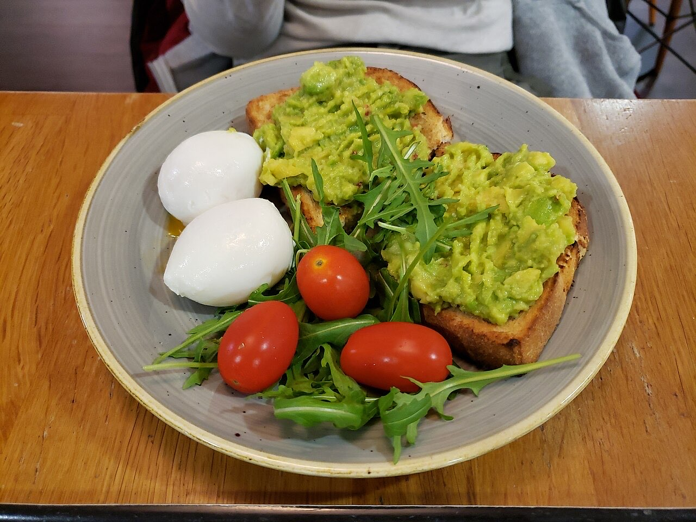

Fotografias ilustrativas — no site final usamos as vossas.
Cafetaria / brunch · Ronfe
Brunch e chá sem pressa em Ronfe
Manhãs e tardes sem pressa.
Um chá quente e boa conversa.
4,6★ em 198 avaliações no Google.
O Paparikos é uma cafetaria e salão de chá na Alameda Professor Abel Salazar, em Ronfe. Venha para um brunch tardio, um chá e uma tarde de conversa.

Fotografias ilustrativas — no site final usamos as vossas.
Encomenda
Diga o que precisa e quando quer levantar (ou receber). Respondemos por WhatsApp.
↑ Assim chegaria a mensagem ao vosso WhatsApp. (Nesta demonstração nada é enviado.)
Onde estamos
Proposta para Paparikos Brunch & Salão de Chá
Esta página foi feita de propósito para Paparikos Brunch & Salão de Chá por João Machado, programador web aqui de Guimarães. Inclui:
Eu trato do alojamento e da manutenção. Sem compromisso.